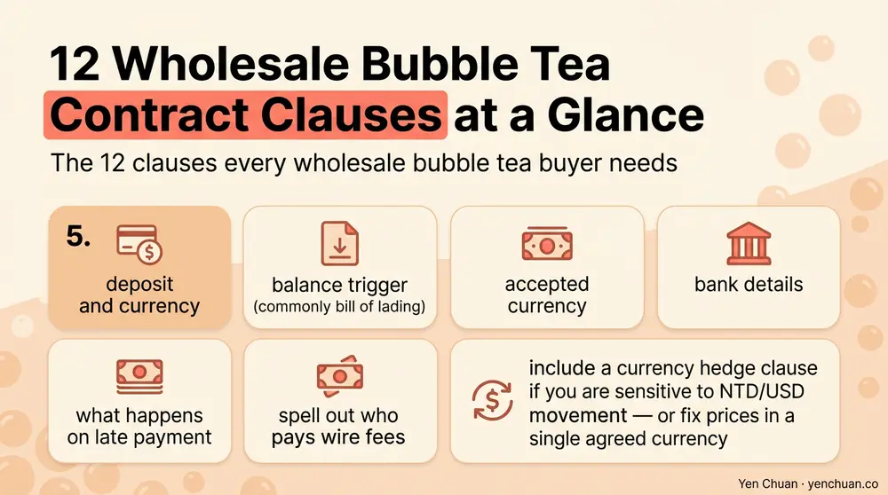
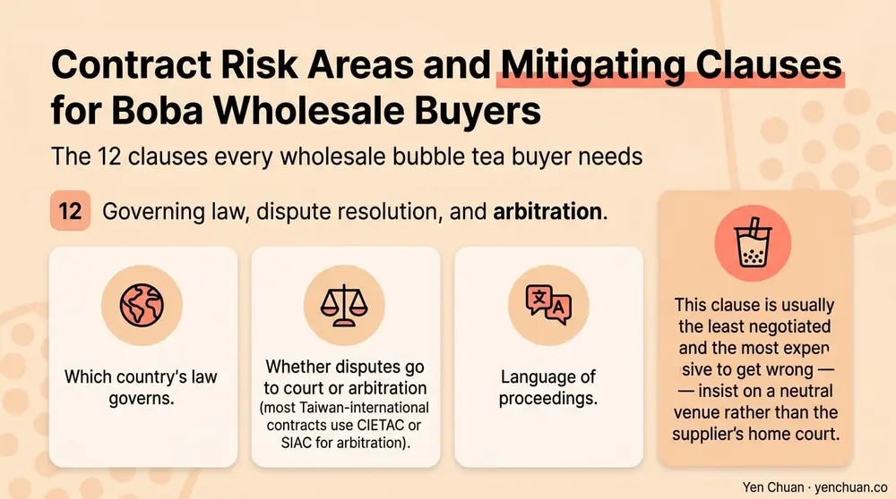

文章 / 經營與採購
Wholesale Bubble Tea Contract: 12-Clause Checklist
這篇是英文原文，尚未完成繁體中文翻譯。中文選單與相關商品連結不會切回英文介面。

查看英文原文（尚未翻譯）
A wholesale bubble tea supply contract is the one document that decides how much leverage you actually have when a shipment arrives wrong, a price index spikes, or a factory misses a lead time. Most first-time buyers sign what a supplier sends over — usually a short pro-forma invoice and a purchase order — and discover later that the real protections they needed were never on paper. This checklist walks through the 12 contract clauses that matter most in a 2026 Taiwan-to-international boba wholesale relationship, with the language patterns each clause should include and the traps to avoid.
Why the contract matters more than the handshake
Good supplier relationships are built on trust. Good contracts exist for the 5 percent of the time when trust is not enough — a container caught in a port strike, a batch that fails a third-party lab test, a sudden cassava starch price spike, or a regulator requesting documentation you never thought to ask for. A contract that only covers price and payment terms leaves you exposed to everything else.
This checklist assumes a buyer in the US, EU, UK, Canada, Australia, or Southeast Asia sourcing from a Taiwanese manufacturer. Most of the structure works equally well for other origins, but specific governing-law and arbitration clauses should be adapted to the trade route. For the broader procurement picture — price negotiation, quality vetting, logistics — pair this with our Milk Tea Supplier Guide.
The 12 clauses every wholesale bubble tea buyer needs
Below is the working set. The order matters: each clause builds on the previous one.
1. Product specification with tolerance bands. The exact SKU, pack size, ingredient list, and the measurable tolerance on each. A spec that says "2 kg bag of brown sugar tapioca pearls, 5 mm ±0.3 mm, moisture 12% ±1%, shelf life 18 months from manufacture" is enforceable. "Brown sugar tapioca pearls" is not.
2. Quality standards and lab-test reference. Name the specific regulatory framework (FDA, EU Reg. 1169/2011, FSANZ), the certifying labs, and the test methods. Include right to request a fresh certificate of analysis per lot. This is where the FDA nutrition labeling requirements work becomes a contract anchor for US buyers.
3. Minimum order quantity and volume commitments. State per-SKU MOQ, combined order minimum, and whether annual volume commitments unlock lower individual-release MOQs. Include what happens if commitments are missed on either side.
4. Pricing structure and index clause. Lock a base price per unit for a stated period (usually 6 or 12 months). For raw-material-sensitive categories like tapioca and cassava-based pearls, add an index clause: price adjusts up or down by a defined percentage if a named raw material index (e.g., Thailand cassava starch FOB) moves beyond an agreed band. Without an index clause, either you or the factory carries all the commodity risk.
5. Payment terms and currency. Deposit percentage, balance trigger (commonly bill of lading), accepted currency, bank details, and what happens on late payment. Spell out who pays wire fees. Include a currency hedge clause if you are sensitive to NTD/USD movement — or fix prices in a single agreed currency.

6. Lead time and production schedule. Stated lead time from PO confirmation to ready-for-shipment, in working days. Include priority-slot provisions for annual-commitment buyers and the remedy if lead times are missed — usually partial credit or airfreight differential paid by the supplier.
7. Incoterms and delivery responsibility. FOB Keelung/Kaohsiung is the most common for Taiwan origin, but larger buyers sometimes negotiate CIF or DDP. Each Incoterm shifts freight cost, customs responsibility, and risk transfer point. Spell out exactly which port and which version of Incoterms (2020 is current).
8. Inspection rights and acceptance. Buyer's right to pre-shipment inspection, right to third-party inspection (SGS, Bureau Veritas, Intertek) at buyer's cost, and the acceptance window once goods arrive. Typical acceptance window is 7-14 days from delivery, with latent defects reservable for up to 6 months.
9. Force majeure and supply continuity. Standard force majeure (war, natural disaster, pandemic, regulatory shutdown) with a duty to notify within 48 hours and a best-efforts obligation to source alternatives. For multi-site café chains, add a supply continuity clause: if the primary factory is down, the supplier commits to sourcing equivalent product from a named backup within a set window.
10. IP and confidentiality, especially for custom formulations. Ownership of custom flavor profiles, private-label artwork, and any R&D work conducted for you. Non-disclosure period for your recipes and volumes. For custom work, specify that formulations developed for you cannot be sold to named competitors for a defined period.
11. Termination and transition. Grounds for termination on each side (material breach, insolvency, repeated quality failures), notice periods, and — critically — a transition clause requiring the supplier to fulfill open POs and supply six months of forecasted volume during wind-down. Without this, termination can strand you without ingredients for months.
12. Governing law, dispute resolution, and arbitration. Which country's law governs. Whether disputes go to court or arbitration (most Taiwan-international contracts use CIETAC or SIAC for arbitration). Language of proceedings. This clause is usually the least negotiated and the most expensive to get wrong — insist on a neutral venue rather than the supplier's home court.

Three sub-clauses buyers frequently miss
Within the 12 above, three specific provisions tend to get left out even by experienced buyers.
Labeling responsibility. For private label or co-packed goods, who owns the label accuracy — nutrition panel, ingredient declaration, allergen statements? A contract that says "Supplier to produce per Buyer's artwork" without an accuracy covenant leaves the buyer liable for any regulatory miss. This matters particularly when shipping to the US, where FSMA and FDA labeling rules cascade to the importer of record.
Halal, Kosher, RSPO, or other certification maintenance. If your product relies on a certification, the contract should require the supplier to maintain it throughout the term and notify you immediately if it lapses. For RSPO-relevant SKUs, see our RSPO vs non-RSPO creamer comparison for the business and cost implications.
Data and audit rights. The right to audit the supplier's production facility once per year at your cost, plus access to batch-level production data. For multi-unit operators and chains, this is how you turn a supplier into a genuine partner rather than a black box.
Where the template contracts fall short
Most pro-forma invoices and standard supplier agreements cover clauses 1, 3, 5, and parts of 7. Everything else — the clauses that protect you when something goes wrong — usually requires buyer-side negotiation. If you are running a regional chain or a fast-growing distributor, a custom master supply agreement with an attached annual commercial schedule is worth the legal time. The one-off template that sits inside most PDF quotes is not.
For operators scoping total procurement cost alongside contract work, our bubble tea startup costs breakdown and the Yen Chuan product catalog are good starting points for understanding what volumes and SKUs justify a master agreement.
What Yen Chuan's own contracts look like
For our direct-export customers, the working template is a six-page master supply agreement with an annual commercial schedule attached. The MSA covers clauses 1, 2, 8, 9, 10, 11, and 12 once, and the commercial schedule handles 3, 4, 5, 6, and 7 annually. This structure keeps the legal review work light after year one and lets pricing and volume terms flex without reopening the full contract. If you are negotiating with us or any other Taiwanese supplier, asking for an MSA plus commercial schedule is a reasonable and common ask.
Authority citations
- International Chamber of Commerce — Incoterms 2020 rules
- FDA — FSMA Foreign Supplier Verification Program
- SIAC — Singapore International Arbitration Centre, Model Clause Guide
- Mordor Intelligence — Asia-Pacific F&B Supply Contract Benchmarks 2026
- McKinsey & Company — Procurement Contract Risk Management Survey, 2025
About Yen Chuan
Yen Chuan has been at the heart of Taiwan's bubble tea industry for over 20 years, supplying premium powders, syrups, tapioca pearls, and tea leaves to thousands of boba shops worldwide. With an in-house R&D lab and a commitment to quality ingredients, Yen Chuan is more than a supplier — we're your partner in the boba business.
We have negotiated thousands of supply contracts with café chains, distributors, and regional importers across 40+ countries. The clauses in this checklist are the ones our export team routinely sees matter most when real problems arise.
Ready to review your supply agreement?
If you are drafting a new wholesale bubble tea contract or rewriting one that no longer fits your volume, our export team is happy to share our master supply agreement template as a starting reference. Contact us to talk through your SKU list and annual volume, and we will walk you through which clauses matter most for your operation.
Frequently Asked Questions
Q: What are the most important clauses in a wholesale bubble tea contract? A: Product specification with tolerance bands, pricing with an index clause for raw-material volatility, lead time with a missed-lead-time remedy, force majeure with supply continuity, and termination with a transition clause. These five protect you against the most common and most expensive supply disruptions.
Q: Should I use the supplier's template contract? A: Usually no. Supplier templates cover price, payment, and basic specs well but leave gaps on inspection rights, force majeure, IP ownership for custom work, and termination transitions. A buyer-side master supply agreement with a commercial schedule is the better structure for anything beyond one-off orders.
Q: What is an index clause and why does it matter? A: An index clause ties the contract price to a named raw-material index (for tapioca, usually Thailand cassava starch FOB). If the index moves beyond an agreed band — typically 5-10 percent — price adjusts. Without one, either you or the supplier carries all the commodity risk for the contract term.
Q: Which Incoterm should I use with a Taiwan bubble tea supplier? A: FOB Keelung or FOB Kaohsiung is the most common for direct-export orders, giving you freight-forwarder choice and control. Larger buyers sometimes negotiate CIF (if they want the supplier to handle freight) or DDP (for turn-key delivered cost). Always specify Incoterms 2020.
Q: How do I handle termination without losing supply continuity? A: Include a transition clause requiring the supplier to fulfill open POs and supply six months of forecasted volume during wind-down after notice of termination. This prevents the supplier from cutting you off overnight and gives you time to qualify an alternative.